딱 여기까지만 알면 되는 말
8분AI를 연결한 웹 앱을 만들 때 만나는 말들을, 앱 하나를 뜯어 보며 익혀보겠습니다!
「실험 결과 제출함」 하나로 봅니다
모둠이 측정값과 결론을 내면 교사 화면에 모이고, AI가 결론에 피드백 초안을 붙이는 앱입니다. 이 매뉴얼에서 만드는 앱이기도 합니다.
| 모둠 | 부피 | 결론 |
|---|---|---|
| 1 | 45 | … |
| 3 | 42 | … |
「실험 결과 제출함」 한 벌아래 단계를 누르거나 [차례로 보기]를 누르면, 그 말에 해당하는 부품이 켜집니다.
프론트엔드학생 기기에 보이는 화면입니다. 이 앱에서는 모둠 번호, 부피, 결론을 적고 [제출]을 누르는 index.html 한 파일입니다. 이 파일은 학생 기기의 브라우저로 내려가서 실행되므로, 파일에 적힌 글자는 누구나 F12로 볼 수 있습니다.
서버24시간 켜져 있는 남의 컴퓨터입니다. 학생 기기가 꺼져도 제출을 받아 둘 곳이 있어야 해서 필요합니다. 이 앱에서는 Supabase가 서버를 빌려줍니다.
백엔드서버에서 돌아가는 프로그램입니다. 들어온 제출을 규칙대로 확인해 표에 넣고, 볼 수 있는 사람에게만 꺼내 줍니다. 학생 눈에는 보이지 않습니다.
데이터베이스제출이 한 줄씩 쌓이는 표입니다. 이 앱에서는 submissions 표에 모둠 번호, 부피, 결론, 낸 시각이 한 줄로 들어갑니다. 교사 화면은 이 표를 읽어 보여 줍니다.
API앱이 백엔드에게 부탁하는 약속된 주소와 양식입니다. [제출]을 누르면 앱이 프로젝트 주소 뒤의 /rest/v1/submissions 로 "이 줄을 넣어 줘"라는 요청을 보냅니다.
API 키요청에 붙이는 출입증입니다. 앱에 넣는 publishable 키는 누구나 볼 수 있다고 보고 쓰고, 표를 지키는 일은 규칙(RLS)이 합니다. AI 회사의 키는 쓴 만큼 결제되므로 앱에 넣지 않고 함수의 금고에 넣습니다.
RLS표마다 거는 규칙입니다. 이 앱은 "학생은 넣기만, 읽기는 교사만"입니다. SQL로 만든 표는 RLS를 따로 켜야 하고, 켜지 않으면 publishable 키를 가진 누구나 모든 줄을 읽고 고칠 수 있습니다.
Edge Function · 환경변수서버에서 도는 작은 함수입니다. 금고(Secrets)에 넣은 AI 키를 이름으로 꺼내 AI에게 대신 묻고, 답만 앱으로 돌려줍니다. 이렇게 코드 밖 금고에 넣고 이름으로 꺼내 쓰는 값을 환경변수라고 합니다.
CORS함수가 브라우저에게 "이 주소의 페이지만 내 답을 읽어도 된다"고 알려 주는 허락입니다. 이 앱의 함수는 내 앱 주소만 허락합니다. 브라우저만 지키는 규칙이라 호출 횟수 제한을 함께 겁니다.
GitHub · 배포앱 파일을 보관하고, 누구나 여는 주소로 걸어 주는 곳입니다. GitHub Pages는 파일만 걸어 주고 서버 코드는 돌리지 못해서, 서버 일은 Supabase가 맡습니다.
말 뜻을 한 번에 보면 이렇습니다.
학생 기기에 보이는 화면입니다. 브라우저로 내려가 실행되므로 누구나 코드를 볼 수 있습니다.
GitHub Pages에 올린 앱보이지 않는 곳에서 저장하고, 확인하고, 대신 부탁하는 쪽입니다.
Supabase24시간 켜져 있는 남의 컴퓨터입니다. 백엔드가 여기서 돌아갑니다.
Supabase, Render표 모양으로 기록이 쌓이는 곳입니다. 줄 하나가 제출 하나입니다.
Supabase의 표정해진 주소와 양식으로 부탁하면 정해진 모양으로 답이 오는 약속입니다.
Supabase API, AI 회사의 API요청에 붙이는 출입증입니다. publishable 키는 앱에 넣어도 되고, secret 키와 AI 회사의 키는 앱에 넣지 않습니다.
3단계, 5단계비밀 키를 코드에 적지 않고 서버의 금고에 넣은 뒤, 이름으로만 꺼내 씁니다.
Edge Function의 Secrets표마다 누가 넣고, 읽고, 고칠 수 있는지 정하는 규칙입니다.
3단계서버에서 돌아가는 작은 함수입니다. 금고의 키로 AI에게 묻고, 답만 돌려줍니다.
5단계어느 주소의 페이지가 답을 읽어도 되는지 브라우저에게 알려 주는 규칙입니다. 브라우저만 지키는 규칙이라 자물쇠는 아닙니다.
5단계코드를 보관하고, 누구나 여는 주소로 걸어 줍니다. 서버 코드는 돌리지 못합니다.
② 배포페이지를 걸어 주면서 작은 함수도 돌려 줍니다. 비밀 키는 환경변수로 넣습니다.
Supabase 대신 쓸 때서버 프로그램을 계속 켜 두는 곳입니다. 무료는 15분 동안 아무도 안 부르면 잠들고, 깨어나는 데 1분쯤 걸립니다.
Supabase 대신 쓸 때오늘 만드는 두 길
이 매뉴얼에 나오는 말은 이 정도면 충분합니다. 저도 이 말들을 순서대로 공부한 것이 아니라, 오류를 만날 때마다 하나씩 알게 됐습니다.
Supabase 프로젝트 만들기
7분Supabase에 가입하고, 데이터를 담을 프로젝트를 하나 만들어보겠습니다!
왜 Firebase나 Apps Script가 아니라 Supabase인가요
모인 기록이 표로 보이고, AI 키를 숨기는 함수를 카드 등록 없이 쓰고, 한 반이 한꺼번에 제출해도 버팁니다.
| Supabase | Firebase (무료 Spark) | Apps Script + 구글 시트 | |
|---|---|---|---|
| 기록 모양 | 표 (줄과 칸) | 문서 묶음 (표가 아님) | 시트 (표) |
| 교사가 보는 화면 | Table Editor에서 표로 보고 CSV로 받음 | 콘솔에서 문서를 하나씩 봄, CSV로 내보내는 단추는 없음 | 시트 그대로 |
| AI 키 숨기기 | Edge Function의 금고, 카드 없이 무료 | Cloud Functions, 카드를 등록하는 Blaze 요금제부터 | 스크립트 속성, 카드 없이 |
| 한 반이 한꺼번에 | 요청 수 제한 없음 | 하루 쓰기 2만 번, 읽기 5만 번까지 | 한 계정에서 동시에 30개까지 실행 |
| 누가 무엇을 하나 | 표마다 RLS 규칙 | 보안 규칙 (Security Rules) | 웹 앱 공개 범위와 스크립트 안의 확인 |
| 조심할 점 | 7일 동안 거의 안 쓰면 멈춤, 1년 안에 다시 켬 | 파일 저장소(Storage)도 Blaze 요금제부터 | 한 번 실행은 6분까지, 여러 명이 한 시트에 쓰면 차례를 지키게 하는 코드가 필요 |
저는 세 가지 때문에 Supabase를 씁니다. 첫째, 모인 기록이 엑셀처럼 표로 보여서 Table Editor가 그대로 교사 화면이 되고, CSV로 받아 평가나 기록의 근거로 옮기기 쉽습니다. 둘째, AI 키를 숨기는 함수(Edge Function)를 카드 등록 없이 씁니다. Firebase에서 같은 일을 하려면 카드를 등록하는 Blaze 요금제로 바꿔야 하고, 예산 알림을 걸어도 요금이 저절로 멈추지는 않습니다. 셋째, 한 반이 한꺼번에 제출해도 버팁니다. Apps Script 웹 앱은 한 계정에서 동시에 30개까지 실행되는데, 「나로 실행」으로 두면 학생들의 요청이 모두 제 계정으로 돌아갑니다.
구글 시트가 더 편한 때도 있습니다. 이미 시트로 일하고 계시고, 학생들이 한꺼번에 몰리지 않는 설문 같은 수합이라면 Apps Script로 충분합니다. 표의 숫자는 2026년 9월 각 회사의 안내 기준입니다.
GitHub 계정으로 들어갑니다
배포에서 쓴 GitHub 계정으로 가입하면 비밀번호를 따로 만들 필요가 없습니다.
- supabase.com 에서 [Start your project]오른쪽 위 [Sign in]이 보이면 그것을 눌러도 됩니다
- [Continue with GitHub]로 로그인GitHub 권한을 묻는 화면에서 [Authorize]배포할 때 GitHub을 어차피 쓰니, 계정을 하나로 묶으면 외울 비밀번호가 하나 줄어듭니다.
- [New project]에서 이름, 데이터베이스 비밀번호, 지역 정하기비밀번호는 [Generate a password] 후 메모장에 저장. 지역(Region)은 Northeast Asia (Seoul)데이터베이스 비밀번호는 대시보드에서 다시 보여 주지 않고 새로 바꾸는 것만 됩니다. 지역을 서울로 고르는 것은 서버가 가까울수록 학생 화면에 답이 빨리 오기 때문입니다.
- [Create new project]를 누르고 1~2분 기다리기프로젝트 화면이 뜨면 준비 끝
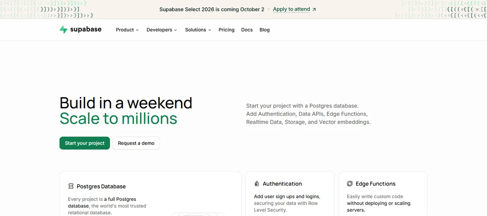
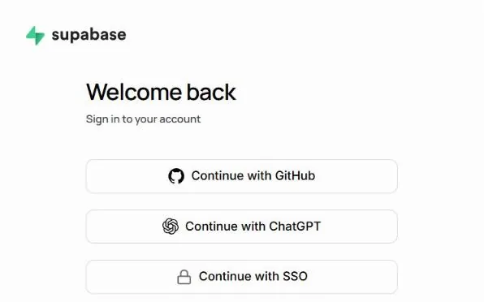
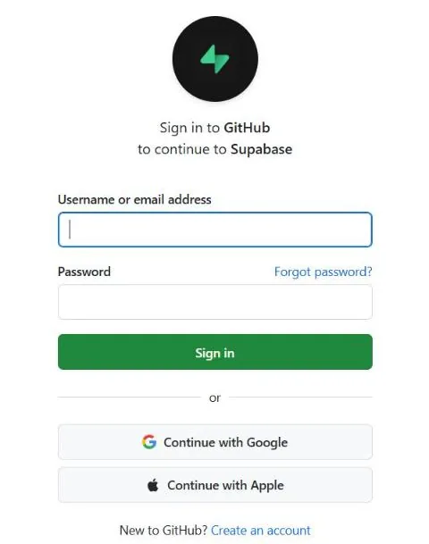
수업용 하나, 연습용 하나로 쓰면 알맞습니다.
일주일 동안 쓰지 않으면 메일로 알려 준 뒤 멈춥니다. 1년 안에는 대시보드에서 다시 켤 수 있습니다.
무료에서는 넘으면 더 쓸 수 없습니다. 한 반이 수업에서 쓰기에는 넉넉합니다.
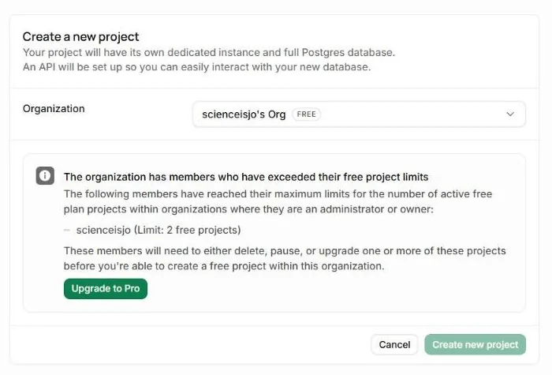
학기 중에 매주 쓰는 앱이라면 멈출 일이 거의 없고, 방학이 지나면 한 번 다시 켜면 됩니다. 저는 수업에 쓰는 앱 여러 개의 표를 프로젝트 하나에 함께 둡니다. 무료 프로젝트가 두 개뿐이라 앱마다 프로젝트를 만들 수는 없기 때문입니다. 이 숫자들은 2026년 9월 Supabase 안내 기준입니다.
주소와 키로 API 연결하기
10분프로젝트 주소와 키를 찾아, 내 앱이 Supabase와 이야기하게 해보겠습니다!
주소 하나, 키 하나
Project URL과 Publishable key 두 가지만 앱에 넣습니다.
- 프로젝트 화면 위쪽의 [Connect] 누르기Project URL과 Publishable key가 함께 보입니다. [Settings] → [API Keys]에서도 찾을 수 있습니다주소는 어느 프로젝트로 보낼지, 키는 어느 앱에서 온 요청인지 알려 줍니다. 둘이 맞아야 Supabase가 요청을 받아 줍니다.
- Project URL 복사하기https://영문자.supabase.co 모양
- Publishable key 복사하기sb_publishable_ 로 시작하는 키앱 파일은 학생 기기로 내려가 누구나 열어 볼 수 있어서, 보여도 괜찮은 키만 앱에 넣습니다.
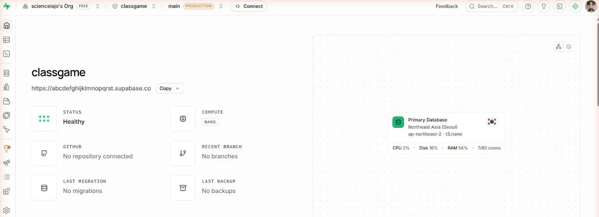
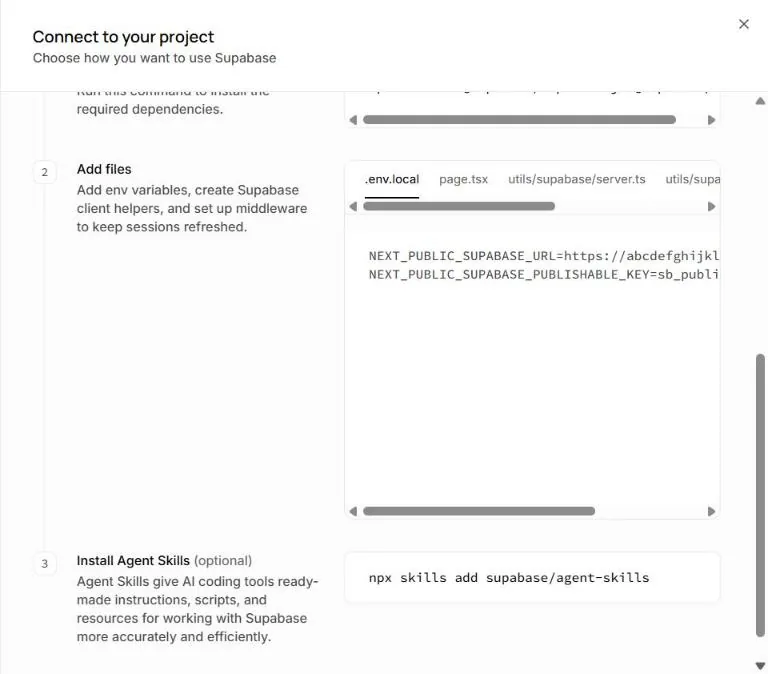
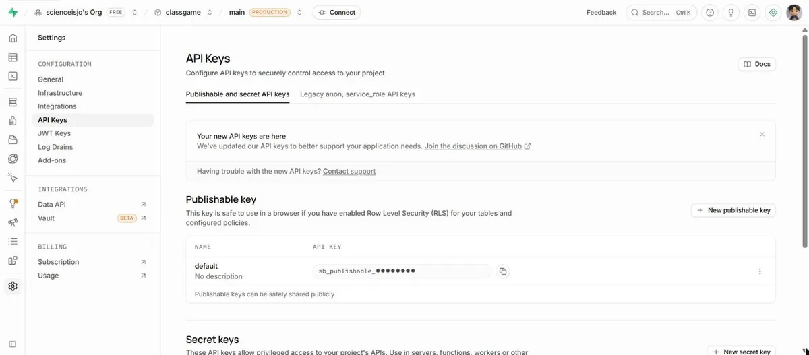
앱에 넣어도 되는 키입니다. 누구나 볼 수 있다는 전제로 쓰고, 표를 지켜 주는 것은 표마다 거는 규칙(RLS)입니다.
모든 규칙을 건너뛰는 열쇠입니다. 앱에도 GitHub에도 넣지 않습니다. AI가 넣으라고 해도 넣지 않습니다.
publishable 키로 온 부탁은 규칙이 허락한 것만 들어갑니다. 이 앱의 규칙은 "학생은 넣기만"입니다.
같은 키로 읽기를 부탁해도 규칙이 막아서 빈 목록이 돌아갑니다. 앱 안의 publishable 키가 보여도 괜찮은 까닭입니다.
secret 키는 규칙을 건너뜁니다. 앱이나 GitHub에 들어가면 누구나 모든 줄을 읽고 지울 수 있어서, 앱에는 넣지 않습니다.
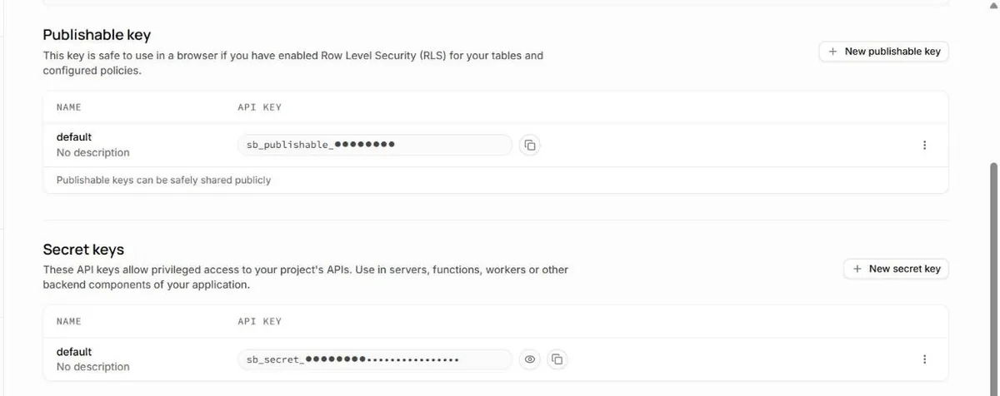
예전 설명서나 AI가 eyJ로 시작하는 긴 키(anon, service_role)를 복사하라고 하면 예전 방식입니다. Supabase는 2026년 말까지 예전 키를 없애 가는 중이라, 새로 만드는 앱은 sb_publishable_ 키로 합니다.
빌더연결 부탁문
복사한 주소와 키, 모을 내용을 적으면 부탁문이 완성됩니다.
- 부탁문을 보내 표를 만드는 SQL 받기되묻는 질문에는 짧게 답합니다표를 마우스로 만들 수도 있지만, 규칙(RLS)까지 한 번에 빠짐없이 걸려면 SQL이 낫습니다. 저도 SQL을 직접 쓰지 않고, AI가 쓴 것을 읽어 본 뒤 실행합니다.
- SQL Editor에 붙여 실행하기왼쪽 메뉴 [SQL Editor] → [+ New query] → 붙여넣기 → [Run]SQL로 만든 표는 RLS를 따로 켜야 합니다. 켜지 않으면 publishable 키를 가진 누구나 모든 줄을 읽고 고칠 수 있어서, 부탁문에 RLS를 꼭 넣었습니다.
- Table Editor에서 표가 생겼는지 보기왼쪽 메뉴 [Table Editor] → 표 이름SQL이 제대로 돌았는지 눈으로 봅니다. 표 위쪽에 RLS가 꺼져 있다고 나오거나 규칙 수가 0이면 AI에게 다시 부탁합니다.
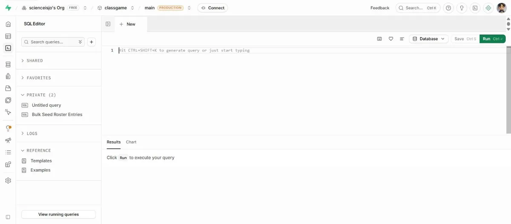
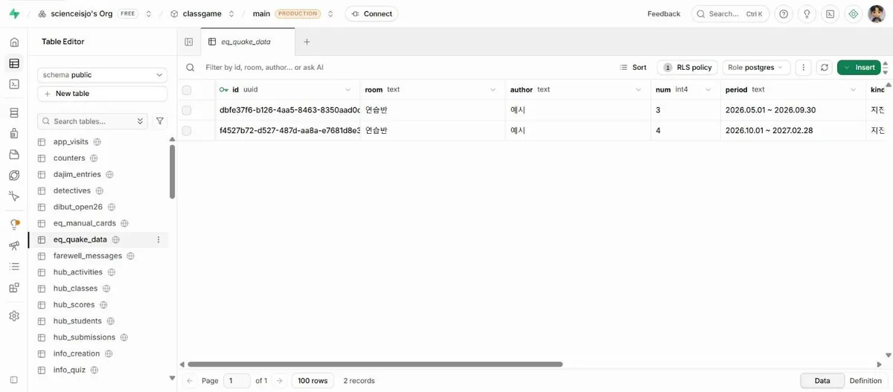
주소와 키 칸에 넣은 값은 이 페이지 안에서 부탁문을 만드는 데만 쓰이고, 어디에도 저장하거나 보내지 않습니다.
막혔을 때
SQL을 실행하려니 경고 창이 뜹니다. 표를 만들거나 규칙을 바꾸는 SQL이면 Supabase가 한 번 더 묻습니다. 경고를 읽고, 이미 있는 표를 지우는(drop) 내용이 아니면 실행합니다.
secret 키를 앱에 넣어 버렸습니다. [Settings]의 [API Keys]에서 그 secret 키를 바로 지우고 새로 만듭니다. 앱에서도 지웁니다.
학생 제출 받아 보기
10분학생처럼 제출해 보고, 모인 기록을 교사가 내려받는 데까지 해보겠습니다!
두 갈래 가운데 하나
칭찬 도장판, 질문나무, 진도 트래커를 내 Supabase에 설치해 쓰는 판입니다. 설치 가이드를 따라갑니다.
3단계의 연결 부탁문으로 내 앱에 [제출] 버튼을 붙이고, 아래 순서로 확인합니다.
- 휴대폰으로 앱 열기배포한 주소가 있으면 휴대폰으로. 아직이면 내 컴퓨터에서 index.html학생은 휴대폰이나 크롬북으로 엽니다. 제 컴퓨터에서 되던 것이 학생 기기에서는 다르게 보이기도 합니다.
- 두세 번 제출해 보기빈칸으로도, 아주 긴 글로도, 버튼 연타로도학생들은 빈칸으로도 내고, 아주 길게도 쓰고, 버튼을 여러 번 누릅니다. 수업 중에 처음 겪는 것보다 미리 겪는 편이 낫습니다.
- Table Editor에서 모인 줄 보기왼쪽 [Table Editor] → 표 이름. 새로고침하면 줄이 늘어납니다오늘은 이 표가 교사 화면입니다. 교사 화면을 따로 만들지 않아도 모인 답을 바로 봅니다.
- CSV로 내려받기표 위쪽의 내보내기(Export) 메뉴에서 CSV. 엑셀에서는 [데이터] → [텍스트/CSV]로 열고 UTF-8을 고릅니다모인 답을 평가나 기록의 근거로 쓰려면 엑셀로 옮겨야 합니다.
- 연습으로 넣은 줄 지우기줄 앞 칸을 골라 [Delete]연습 줄이 남아 있으면 수업 날 모인 답과 섞입니다.
| 모둠 | 부피(mL) | 결론 |
|---|---|---|
| 1 | 45 | … |
| 2 | 38 | … |
| 3 | 42 | … |
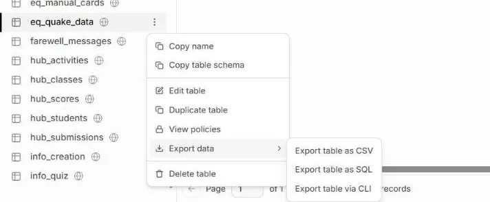
모인 답을 보는 교사 화면까지 앱으로 만들려면 교사 로그인이 필요합니다. 로그인 없이 읽기를 열어 두면, 주소를 아는 누구나 학생 답을 볼 수 있기 때문입니다. 오늘은 Supabase의 Table Editor가 교사 화면을 대신합니다. 교사 로그인을 붙이는 법과 학교 심의 자료 만들기는 학생 데이터 연수 자료에 따로 정리해 두었습니다.
막혔을 때
제출했는데 표에 줄이 생기지 않습니다. 앱에서 F12를 눌러 [Console]에 빨간 글이 있는지 보고, 그 글을 그대로 AI에게 보냅니다. RLS 규칙이 빠졌거나 표 이름이 다른 경우가 가장 많습니다.
교사 화면에 1,000줄까지만 보입니다. Supabase는 한 번에 1,000줄까지만 돌려줍니다. 오류 없이 조용히 잘리기 때문에, AI에게 "1,000줄씩 나눠서 모두 받아 오게 고쳐 줘"라고 합니다.
엑셀에서 한글이 깨집니다. CSV 파일을 두 번 눌러 열지 말고, 엑셀의 [데이터] 탭에서 [텍스트/CSV]로 불러와 UTF-8을 고릅니다.
내 앱에 AI 연결하기
12분AI를 붙이면 무엇이 되는지 보고, 키를 숨긴 채 연결하는 구조와 결제 한도를 걸어보겠습니다!
AI를 붙이면 되는 일
실험 결론이나 서술형 답을 넣으면 채점 기준에 맞춘 피드백 초안이 나옵니다. 교사가 읽고 고쳐서 돌려줍니다.
학생 질문을 주제별로 묶고, 수업에서 다룰 만한 질문을 골라 줍니다.
같은 개념으로 숫자와 상황만 바꾼 연습 문제를 만듭니다.
과학자나 물질이 되어 학생 질문에 답하는 역할 놀이입니다. 학생이 AI와 직접 대화하므로 아래 기준을 먼저 봅니다.
학생이 AI와 직접 대화하는 앱은 회사 약관과 법을 먼저 확인합니다. OpenAI API는 미성년자가 쓰게 하려면 보호자 동의와 나이에 맞는 안전장치를 두게 되어 있고, Anthropic(Claude) API는 미성년자가 쓰는 서비스에 나이 확인, 내용 거르기, AI라는 사실 밝히기 같은 안전장치를 요구합니다. 개인정보 보호법은 만 14세 미만의 개인정보를 처리하려면 법정대리인의 동의를 받게 합니다. Google(Gemini API)은 제가 아직 잘 알지 못해 준비 중입니다.
그래서 교사가 쓰는 도구에 AI를 붙이는 쪽이 시작하기 쉽습니다. 학생 글을 넣을 때도 이름과 번호는 지우고 넣습니다. 약관 내용은 2026년 9월 각 회사의 안내를 기준으로 정리했고, 바뀔 수 있어서 쓰시기 전에 한 번 더 확인하시길 권합니다.
AI 키는 브라우저에 두지 않습니다
AI 회사의 키는 쓴 만큼 결제되는 법인카드입니다. 앱 코드에 넣으면 누구나 F12로 볼 수 있습니다.
앱 파일에 적은 키는 누구나 F12로 봅니다. 누가 가져가 부르면 그만큼 제 카드로 결제됩니다.
키는 함수의 금고에만 있고, 앱을 F12로 열어 봐도 함수 주소만 보입니다. 함수가 부르는 횟수를 세어 넘치면 막습니다.
앱의 코드는 브라우저로 내려받아 실행되는 것이라, 파일에 적힌 글자는 누구나 볼 수 있습니다. 그래서 AI 키는 Supabase의 Edge Function 같은 서버 쪽 금고에 넣고, 앱은 그 함수에게 부탁만 합니다. 함수가 금고에서 키를 꺼내 AI에게 묻고, 답만 앱으로 돌려줍니다. Netlify나 Vercel의 함수, Render의 서버에 키를 환경변수로 넣어도 같은 구조가 됩니다.
브라우저는 다른 주소의 서버에 부탁할 때, 그 서버가 "이 주소의 페이지는 답을 읽어도 된다"고 허락해야 답을 보여 줍니다. 이 허락이 CORS입니다. 함수가 내 앱 주소만 허락하면 다른 사이트의 페이지가 내 함수를 끌어다 쓰기 어려워집니다. 다만 CORS는 브라우저만 지키는 규칙이라 다른 프로그램으로 직접 부르는 것까지 막지는 못해서, 호출 횟수 제한과 결제 한도를 함께 겁니다.
키를 받기 전에 결제 한도부터
선불로 조금만 넣고, 자동 충전을 끄고, 월 한도를 겁니다.
| 회사 | 키 받는 곳 | 결제 | 한도 거는 곳 | 꼭 볼 것 |
|---|---|---|---|---|
| OpenAI | platform.openai.com의 API keys | 선불 크레딧, 5달러부터 | Settings의 Limits에서 월 한도를 정하고 "Enforce a hard limit" 켜기 (조직 또는 프로젝트) | 결제를 등록할 때 자동 충전(auto-reload)이 켜진 채로 시작하니 끕니다 |
| Anthropic (Claude) | platform.claude.com의 API keys | 선불 크레딧, 다 쓰면 멈춤 | Settings의 Billing에서 Spend limits. 수업용 Workspace를 따로 만들어 그 Workspace에 월 한도 | 자동 충전(Auto-reload)이 꺼져 있는지 봅니다. 기본 Workspace에는 한도를 걸 수 없습니다 |
| Google (Gemini) | 준비 중입니다. 제가 아직 잘 알지 못하는 부분이라, 직접 써 보고 확인한 뒤에 채우겠습니다. | |||
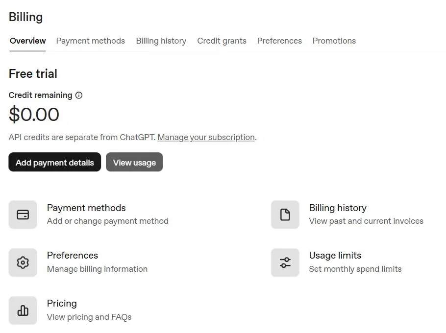
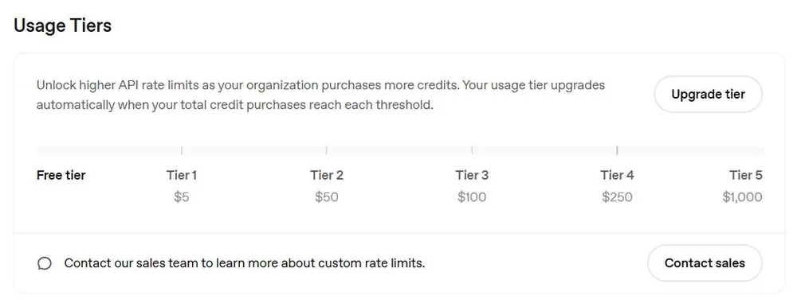
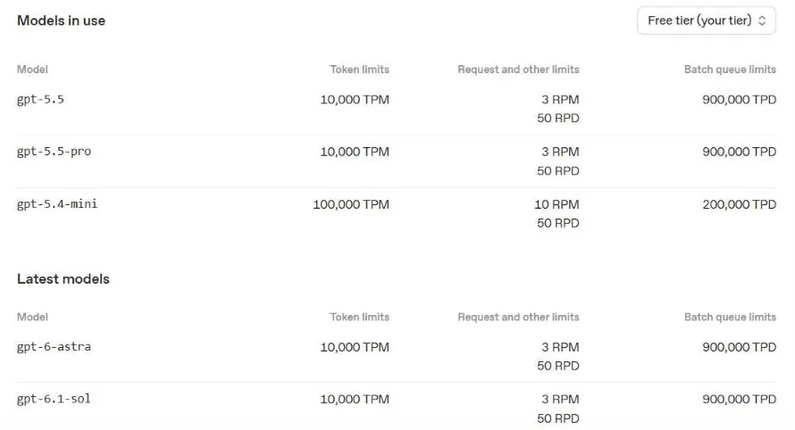
처음에는 크레딧을 5~10달러만 넣고 자동 충전을 끈 채로 시작하면, 무슨 일이 생겨도 넣은 돈 이상은 나가기 어렵습니다. 다만 회사들은 한도에 닿은 뒤 몇 분 동안은 조금 더 쓰일 수 있다고 적어 두었습니다. 메뉴 이름은 2026년 9월 기준이고 자주 바뀝니다.
빌더AI 함수 부탁문
함수 코드와 앱 쪽 코드를 한 번에 받습니다. 코드는 대시보드에 붙여넣기만 하면 됩니다.
- AI 회사에서 결제 한도를 걸고 키 만들기위 표의 순서대로. 키는 만들 때 한 번만 보이니 바로 다음 칸으로키가 새어 나가면 제 카드로 결제됩니다. 한도를 먼저 걸면 최악의 경우에도 넣은 돈 안에서 멈춥니다.
- Supabase의 금고(Secrets)에 키 넣기[Edge Functions] → [Secrets] → Key에 OPENAI_API_KEY, Value에 키 → [Save]. 넣자마자 쓸 수 있습니다앱 파일에 적은 글자는 F12로 누구나 봅니다. Secrets에 넣은 키는 함수만 꺼내 씁니다.
- 부탁문을 보내 함수 코드와 앱 쪽 코드 받기되묻는 질문에는 짧게 답합니다
- 대시보드에서 함수 만들기[Edge Functions] → [Deploy a new function] → [Via Editor] → 함수 코드 붙여넣기 → 이름 정하고 [Deploy function]함수는 Supabase의 서버에서 돌아서 학생 기기로 내려가지 않습니다. 그래서 키를 꺼내 쓸 수 있습니다.
- 함수 설정의 Verify JWT 확인하기publishable 키로 부르는 함수는 끄고, 대신 함수 안에서 호출 횟수를 셉니다. AI가 알려 준 대로publishable 키로 부르면 로그인한 사람의 표(JWT)가 없어서, 이 스위치가 켜져 있으면 401 오류로 막힙니다. 대신 함수 안에서 부르는 횟수를 세어 막습니다.
- 앱에서 불러 보기답이 오면 성공. 오류 글은 그대로 AI에게 보냅니다
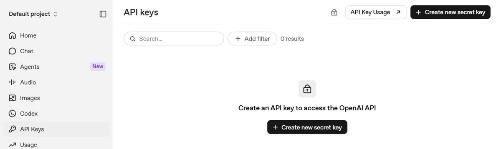
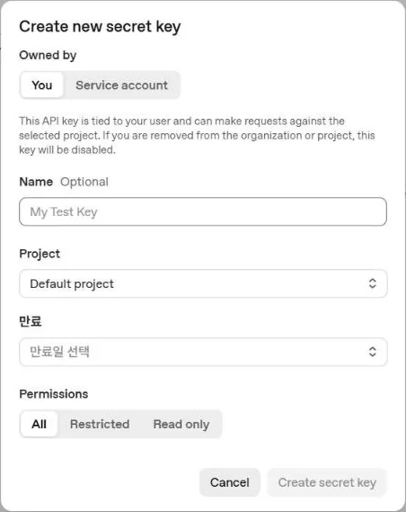
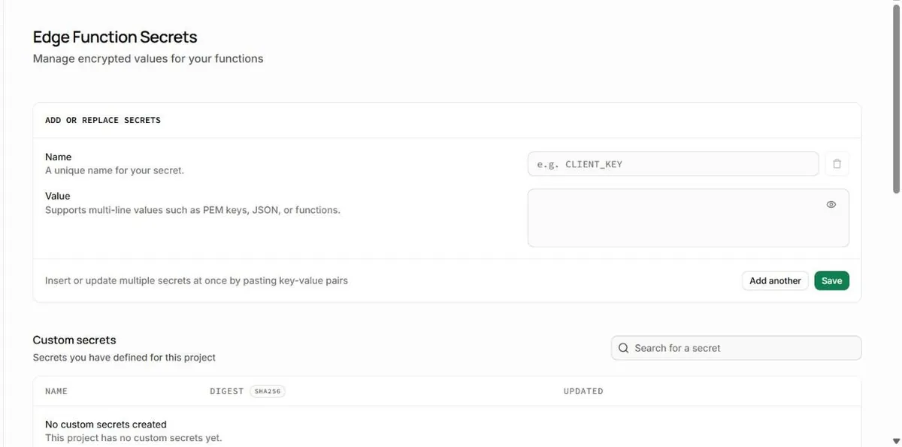
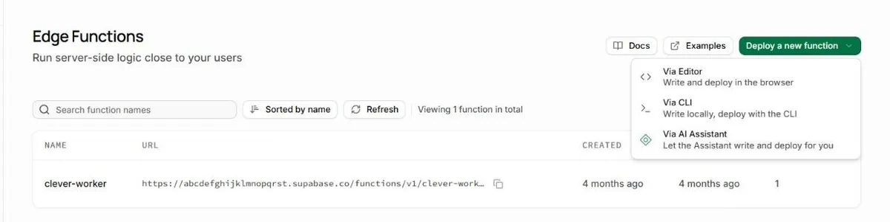
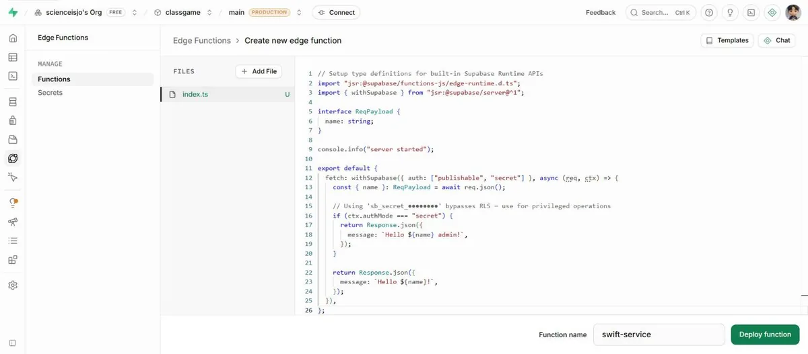
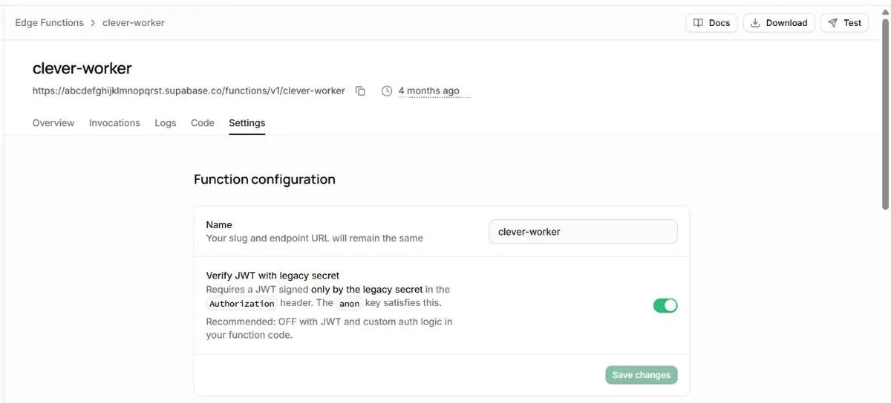
막혔을 때
앱에서 부르니 CORS 오류가 납니다. 오류 글을 그대로 AI에게 보내고 "함수의 CORS 설정에 내 앱 주소를 넣고, OPTIONS 요청에 답하게 고쳐 줘"라고 합니다. 허락할 주소는 https://아이디.github.io처럼 뒤에 폴더 이름 없이 적습니다.
401 오류가 납니다. Verify JWT가 켜져 있으면 publishable 키로는 들어가지 못합니다. 함수 설정에서 끄고 다시 불러 봅니다. 함수를 다시 배포한 뒤 이 설정이 되돌아가는 일이 있어서 한 번 더 확인합니다.
보관함 미리보기에서는 AI 답이 오지 않습니다. 함수가 내 앱 주소만 허락하기 때문입니다. 배포한 주소로 열어서 확인합니다.
Render 서버의 첫 답이 1분 가까이 걸립니다. 무료 서버가 잠들었다 깨는 시간입니다. 수업 시작 전에 한 번 불러 깨워 둡니다.
학생에게 내놓기 전 다섯 가지
8분학생에게 내놓기 전에 다섯 가지를 하나씩 확인해보겠습니다!
이 다섯 가지만 답할 수 있으면 됩니다
- 학생 정보가 어디로 가는지앱이 무엇을 어디로 보내는지 적어 봅니다. Supabase의 표, AI 회사. 이름·번호·얼굴 사진은 보내지 않고, 학교의 심의 절차를 확인합니다
- API 키가 드러나지 않는지앱 파일에서 Ctrl+F로 sk-, sb_secret, AIza를 찾아 봅니다. 하나라도 나오면 올리지 않습니다
- AI가 틀렸을 때 어떻게 하는지AI 답 아래에 "AI가 쓴 답이라 틀릴 수 있어요"를 붙이고, 평가에 쓰는 답은 교사가 먼저 읽습니다
- 비용이 폭주하지 않게 무엇으로 막는지세 겹. 회사 쪽 월 한도와 자동 충전 끄기, 함수의 호출 횟수 제한, 짧은 답과 가벼운 모델
- 서비스가 고장 났을 때 수업 대안이 있는지같은 활동을 종이 활동지나 AI 없는 판으로 할 수 있게 준비하고, 앱은 오류가 나도 멈추지 않고 안내 문구를 보여 주게 합니다
몰려온 요청은 호출 횟수 제한에서 대부분 걸러지고, 지나간 요청도 한 번에 드는 돈이 작고, 끝에서는 회사 쪽 한도에서 멈춥니다.
AI 회사나 Supabase도 멈추는 날이 있습니다. 수업 한 차시를 통째로 앱에 걸어 두면 그날 수업이 같이 멈추기 때문에, 앱이 없던 때의 방법을 옆에 남겨 두는 편이 안전합니다.
키가 새어 나갔다면
- 그 키를 바로 지우기회사 대시보드의 API keys에서 삭제(Revoke)
- 새 키를 만들어 금고에 다시 넣기Supabase [Edge Functions] → [Secrets]에서 값만 바꿉니다
- 사용량 화면에서 모르는 사용이 있었는지 보기날짜별 사용량이 갑자기 튀었는지
- 모르는 결제가 있으면 회사에 바로 문의하기키를 지운 시각과 사용 기록을 함께 보냅니다
GitHub 공개 저장소에 키를 올리면 GitHub가 찾아내 회사에 알려 주고, OpenAI와 Anthropic은 그 키를 곧바로 막습니다. Supabase도 공개 저장소에서 찾은 secret 키를 없앱니다. 그래도 그 사이에 누군가 쓸 수 있습니다. 2026년 2월에는 한 작은 회사의 Google 키가 새어 나가 48시간 만에 8만 2천 달러, 우리 돈으로 1억 원이 넘게 청구된 일이 보도되기도 했습니다.
학생 정보를 모으거나 학생이 AI를 쓰게 하는 앱은 학교의 절차를 먼저 확인합니다. 2026학년도부터 학교에서 쓰는 에듀테크와 소프트웨어는 학교운영위원회 심의를 거치게 되었습니다.
한 번 더 확인하고 보관함에
5분파일에 비밀 키가 없는지 확인하고, 보관함에 올려보겠습니다!
- 앱 파일에서 비밀 키 찾기Ctrl+F로 sk-, sb_secret, AIza. publishable 키(sb_publishable_)는 들어 있어도 괜찮습니다
- 연습으로 넣은 줄 지우기Table Editor에서 줄을 골라 [Delete]
- 보관함에 올리기회차와 PIN을 고르고 index.html을 끌어다 놓기
학생 제출 모으기, 교사 로그인, 학교 심의 자료까지 더 깊이 다룬 자료는 학생 데이터, 모으기 전에에 있습니다.